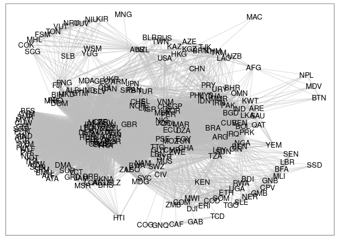
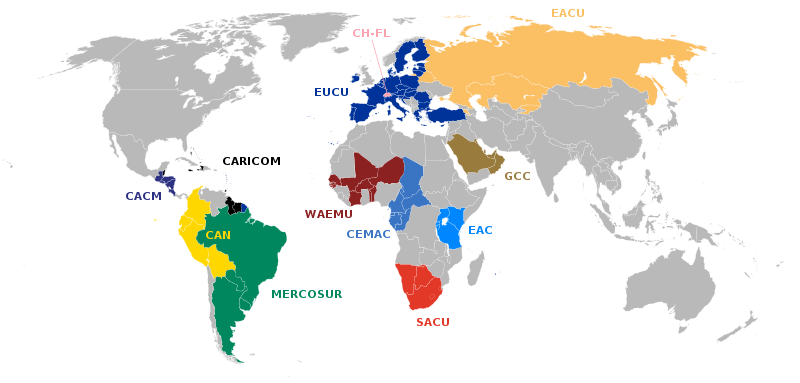

国際貿易
国際公共政策学
はじめに
国際関係＝国家間の平和と戦争\(\leadsto\)技術革新により国境を越えた経済・社会活動
\(\leadsto\)国際関係＝安全保障＋国際政治経済 (international political economy)
- 国際経済を巡ってどのような国内・国際政治が展開されるのか？
- 国際経済は国内・国際政治にどのような影響を与えるのか？
従来は貿易と金融・通貨が中心的課題\(\leadsto\)本来は国内問題であった開発、環境保護、人権保障などへ対象が拡大
1 貿易のグローバル化
国際貿易の拡大
地域貿易協定 (regional trade agreement: RTA) の増加

一方で、関税 (tariff) は残っている。
- 関税：輸入する際に付加される税金
地域貿易協定や関税同盟 (custom union) は一部の国や地域に限定
- 関税同盟：国家間で関税を撤廃する協定


\(\leadsto\)自由貿易はよいものなのか？ そうであるならば、なぜ完全な自由化は実現していないのか？
2 自由貿易の論理
2.1 比較優位
比較優位 (comparative advantage) の存在\(\leadsto\)貿易

イギリスとポルトガルの貿易
イギリスとポルトガルが布とワインの生産と貿易を行おうとしている。
- どちらの国も労働力のみを使って生産する。
- イギリスは布1巻生産するのに15人、ワインを1樽生産するのに30人の労働者が必要である。
- ポルトガルは布1巻生産するのに10人、ワインを1樽生産するのに15人の労働者が必要である。
| 布 | ワイン | 布の機会費用 | ワインの機会費用 | |
|---|---|---|---|---|
| イギリス | 15 | 30 | 0.5 | 2 |
| ポルトガル | 10 | 15 | 0.66… | 1.5 |
ポルトガルはイギリスよりも少ない労働力で同じ量の布あるいはワインを生産することができる＝布とワインの両方に絶対優位 (absolute advantage)
\(\leadsto\)ポルトガルは布もワインも自国で生産したほうが効率的？
- ポルトガルはワインを1樽生産するために布を1.5巻諦めないといけない。
- イギリスは2巻諦めないといけない。
\(\leadsto\)ポルトガルはイギリスに対して、布に比べてワインに比較優位を持っている。
- イギリスは布1巻を生産するためにワインを0.5本諦めないといけない。
- ポルトガルは0.66…本諦めないといけない。
\(\leadsto\)イギリスは布に比較優位を持っている。
比較優位＝他国に比べて、「他の財と比較して」とある財をより効率的に生産できるということ
イギリスとポルトガルの貿易’
ポルトガルには1500人の労働者がいる。
布の生産量を\(x\)、ワインの生産量を\(y\)として、1500人の労働者が全員働くとすると、次の式を満たす。
\[ \begin{split} & \underbrace{10 \times x}_{\textrm{布の生産の労働者数}} + \underbrace{15 \times y}_{\textrm{ワインの生産の労働者数}} = 1500 \\ & \Leftrightarrow y = 100 - 0.66 \dots \times x \end{split} \]
生産可能性フロンティア (production possibilities frontier)：資源を効率的に用いた際（余りのない状態）の財の生産量の組み合わせ
- フロンティアより左下は働いていない労働者がいるので非効率的
- フロンティアより右上は労働者が足りなくて不可能
ポルトガルとイギリスで貿易
- ポルトガルはワインを自国よりも高く売り、
- ポルトガル：ワインを1樽を諦めて1.5巻の布を生産
- イギリス：ワインを1樽を諦めて2巻の布を生産
- イギリスよりも低く売ることができる。
- ポルトガル：布を1巻を諦めて0.66…樽のワインを生産
- イギリス：布を1巻を諦めて0.5樽のワインを生産
イギリスとポルトガルの貿易’’
ポルトガルはワイン1樽を輸出し、イギリスから1.75巻の布を輸入する（言い換えれば、イギリスは布1巻を輸出して、0.57…樽のワインを輸入する）。
- 交易条件 (terms of trade)：財の交換の条件
イギリスとポルトガルの貿易’’’
ポルトガルはワインの生産だけを行い、布はイギリスから輸入する。
- 特化 (specialization)：特定の財の生産のみを行うこと
イギリスへのワインの輸出量を\(z\)とすると、生産可能性フロンティアはこのようになる。
\[ \begin{split} & 15 \times (y + z) = 1500 \\ & \Leftrightarrow y + z = 100 \end{split} \]
ポルトガルはワイン1樽につき、布1.75巻をイギリスから輸入するので、\(x = 1.75 \times z\)、すなわち\(z = x/1.75\)である。
\[ \begin{split} & y + z = 150 \\ & \Leftrightarrow x/1.75 + y = 100 \\ & \Leftrightarrow y = 100 - x/1.75 \end{split} \]
\(\leadsto\)貿易をしない時に比べて、生産可能性フロンティアが拡大
- イギリスが布の生産に特化しても同様
\(\leadsto\)各国が比較優位のある財の生産に特化し、それを貿易することで世界全体の生産量が増える。
2.2 余剰分析
貿易が消費者や生産者に与える影響を調べるために余剰分析 (surplus analysis) を行う。
ある財の国内市場について考える。
- 需要曲線 (demand curve)：価格が下がると消費量は増える
- 供給曲線: (supply curve)：価格が上がると生産量は増える
\(\leadsto\)需要曲線と供給曲線の交点で価格と生産量＝需要量が決定される。
- （部分）市場均衡などと呼ばれる。
消費者は均衡価格よりも高い価値を財に見出しているので、財を購入する。
- 均衡価格と消費者がその財に見出している価値の差＝消費者の厚生 (welfare)
消費者余剰 (consumer surplus)：需要曲線と均衡価格で囲まれた部分の面積
- 生産者余剰 (producer surplus) も同様

貿易\(\leadsto\)比較劣位にある財を輸入\(\leadsto\)は国内の均衡価格＞世界の均衡価格\(\leadsto\)生じた需要超過は輸入

貿易を行わなかった場合と比べて、社会全体の余剰は拡大／生産者余剰は減少
2.3 貿易のパターン
ヘクシャー＝オーリン・モデル\(\leadsto\)どのような国がどのような財に比較優位を持つのかを説明
- 生産要素 (factor of production)：生産のために用いられる財
- 農業のための土地、単純労働のための労働者、設備投資のための資本、知的労働のための人的資本……etc
各国はこれらの生産要素の量、要素賦存量 (factor endowment) が異なる
\(\leadsto\)各国は量の多い生産要素を集約的に使用する財に比較優位を持ち、それを輸出する。
- ある生産要素が豊富にある\(\leadsto\)市場での供給量も多い\(\leadsto\)その生産要素の価格（賃金）は低い\(\leadsto\)その生産要素を集約的に使用する財の生産コストは低い＝比較優位
\(\leadsto\)なぜ異なる国が異なる財を輸出するのか、なぜある国が経済発展の度合いによって異なる財を輸出するのかも説明
- 土地の多い国は農業が、人口の多い国は軽工業が、資本の多い国は重工業が、人的資本の多い国はサービス業が盛ん
現代の貿易の大半はグローバル・サプライ・チェーンの中で行われている。
- オフショアリングによって部品を製造し、最終的に財を組み立てる。
- 特に、多国籍企業 (multinational corporation: MNC) は海外直接投資 (foreign direct investment: FDI) によって海外に工場を持ち、企業内貿易 (intrafirm trade) を行っている。
単純に輸出入する財の価格ではなく、その国で生み出された付加価値で貿易を把握すべき？(猪俣 2019)
他にも、同一種類の財の「産業内貿易」や同盟などの政治的関係の影響
3 保護主義の論理
比較優位に基づく自由貿易が望ましい／各国は自発的に貿易を（完全には）自由化していない
- 輸出\(\leadsto\)国内で雇用を創出
- 輸入\(\leadsto\)外貨が流出
- 新重商主義 (neo-mercantilism)：輸入を規制＆輸出を促進\(\leadsto\)経済力を高めようとする
国際政治上の理由だけでなく、国内政治経済上の理由でも自由化は妨げられる。
\(\leadsto\)保護主義 (protectionism)：貿易障壁 (trade barrier) によって自由貿易を阻害する政策
- 代表的な貿易障壁は関税 (tariff)
- 関税以外の貿易障壁をまとめて非関税障壁 (nontariff barrier to trade)
- 輸入の量を制限する数量規制 (quantitative restriction)
- 輸入割当 (import quota)
- 国内製品の優遇、
- 外国製品を狙った規制
- 国内産業への補助金など
自由貿易や保護主義の恩恵は全てのアクターに行き渡るわけではない
- 自由貿易や保護主義がどのようなアクターの利益になるのか？
3.1 貿易政策の利益
貿易を制限\(\leadsto\)自由貿易の場合と比べて、社会全体の余剰は減少／生産者余剰の減少は低減
\(\leadsto\)自由貿易／保護主義で得をする／損をする人は異なる
- 保護主義\(\leadsto\)（本来、安く輸入できたはずの）比較劣位財の価格が上がる\(\leadsto\)その生産者は生産量を増やす\(\leadsto\)収入の拡大
- 自由貿易\(\leadsto\)比較劣位財の価格が下がる\(\leadsto\)比較劣位財の消費者(Baker 2005)や比較優位財の生産者は消費量を増やす。
- ナショナリスティックな消費者\(\leadsto\)保護主義を支持しやすい(Mansfield と Mutz 2013)
- 比較優位財の生産者（輸出者）は保護主義によって他国から報復されることを恐れる。
\(\leadsto\)自由貿易によって被害を受け、自由貿易に反対するのは、どのような人々なのか？
- その国で豊富ではない生産要素の所有者（階級）は自由貿易に反対する。
- ストルパー＝サミュエルソン定理：ある財の価格が高まると、その財に必要な生産要素の価格（賃金）が上昇
- 自由貿易\(\leadsto\)比較優位財（輸出財）の需要が高騰\(\leadsto\)価格・賃金も上昇
- 比較優位財に集中的に必要となる生産要素＝ヘクシャー＝オーリン・モデルによればその国で豊富な生産要素
- 比較劣位財を生産している産業に属する人々は自由貿易に反対(Mayda と Rodrik 2005)
- 一部の生産要素は特定の産業に固有な特殊要素 (specific factor)
- 自由貿易によって価格や生産量が減少／簡単に他の財の生産には切り替えられない
- 比較劣位財を生産している企業が自由貿易に反対
- 実際に貿易に関与している企業は、一国内でもひと握り(Freund と Pierola 2020)
\(\leadsto\)自由貿易は社会全体としては望ましくても、一部の人々や企業には望ましくない
- インドでは貿易自由化の影響が大きい地域ほど、貧困率の低下が遅くなった(Topalova 2010)
- 途上国では自由貿易\(\leadsto\)労働者の賃金上昇のはず
- アメリカでは中国との貿易の影響を受けた地域の製造業の失業率は高く、他の地域や非製造業への移動も少なかった(D. H. Autor, Dorn, と Hanson 2013)
- 労働者や企業は簡単に衰退産業から撤退できない
保護主義から利益を得るアクターの大きさ＜自由貿易から利益を得るアクターの大きさ
\(\leadsto\)一般的に言えば、民主主義国は権威主義国に比べて一般利益が反映されやすいため、自由貿易を好む(Milner と Kubota 2005; Kono 2006)
- 左派（右派）政権は貧しい国では自由貿易（保護主義）を支持し、豊かな国では保護主義（自由貿易）を支持しやすい(Dutt と Mitra 2002)
- 労働者は左派を支持しやすく、貧しい国では労働者が相対的に多い。
3.2 集合行為問題
公共財 (public goods)：非排他的 (nonexcludable) かつ非競合的 (nonrival) な財
- 非排他的：財の消費を一部のアクターに制限することができない。
- 非競合的：財を消費するアクターの数が増えても財は減らない。
| 排他的 | 非排他的 | |
|---|---|---|
| 競合的 | 私的財 | コモンズ |
| 非競合的 | クラブ財 | 公共財 |
\(\leadsto\)公共財の共有は囚人のジレンマであり、タダ乗りが起こりやすい
- 集合行為問題 (collective action problem)：集団内で協調が実現すれば誰もが喜ぶのに、協調が実現できない問題
貿易政策も公共財であり、集合行為問題（タダ乗りが生じる）となる
- 自由貿易による恩恵\(\leadsto\)全ての消費者に行き渡る＆消費者が増えても減らない
- 保護主義による恩恵\(\leadsto\)階級や産業の一部の労働者や企業だけが利益を得ることはな＆労働者や企業が増えても減らない
貿易政策を巡るロビー活動
ある比較劣位財を生産する産業において、2つの企業が保護主義的な政策を取るように政治家へロビー活動を行う。
- 互いに何もしなければ、貿易が自由化されて1の利益しかもらえない。
- ロビー活動を行うことで貿易が自由化されず\(b\)の利益 (benefit) を得るが、\(c\)の費用 (cost) を支払う。
- ただし、お互いに協力をしてロビー活動を行えば、費用は\(c/2\)に減る。
- 保護主義の利益は\(c/2 < b < c\)くらいの大きさである。
- 一企業でロビー活動をするほど大きな利益ではない。
- 協力してロビー活動をするメリットはある。
- 自由貿易を求める一般市民も同様の問題に直面する。
協調を実現する手段として、トリガー戦略を用いる。
- 「ロビー活動をするが、相手がロビー活動をしなかった場合はこちらも何もしない」というトリガー戦略
- 将来の価値は割り引かれる (discounted)
- 今日もらえる1万円と1年後にもらえる1万円のどっちが嬉しいか？
- 将来の価値は割引因子\(0 < \delta < 1\)がかけられる（とする）。
- 割引因子が大きい＝将来を重視している
\[ \begin{split} &\textrm{常に互いに協力するときの利益} \\ &= \underbrace{1+b-c/2}_{\textrm{現在、協力する利益}} + \underbrace{\delta \times (1+b-c/2) + \delta^2 \times (1+b-c/2) \cdots}_{\textrm{将来、協力し続ける利益}} \end{split} \]
\[ \begin{split} &\textrm{最初には自分だけなにもせず、その後は互いになにもしないときの利益} \\ &= \underbrace{1+b}_{\textrm{現在、タダ乗りする利益}} + \underbrace{\delta \times 1 + \delta^2 \times 1 \cdots}_{\textrm{将来、互いに協力をしない利益}} \end{split} \]
- 裏切ってなにもしないことでその時は大きな利益を得られる。
- その後は報復されて互いに不協力に陥って利益を得られない。
\(\leadsto\)長期的関係があり将来の利益を重視する＝割引因子が大きい\(\leadsto\)将来の自由化の不利益よりも保護主義の利益を重視\(\leadsto\)協力してロビー活動
\[ \begin{split} 1+b-c/2 &< 1+b \\ \delta \times (1+b-c/2) &> \delta \times 1 \\ \delta^2 \times (1+b-c/2) &> \delta^2 \times 1 \\ \vdots &> \vdots \end{split} \]
一般的に、長期的関係＆将来の利益を重視\(\leadsto\)トリガー戦略による協調が可能
- 報復されるという将来の出来事の認識（将来の影）
- 他の分野でも報復されるというイシュー・リンケージ
- 明確なルール・協力姿勢の確認（情報の非対称性の解決）
\(\leadsto\)小さな集団の方が集合行為問題を克服しやすい(Olson 1996)
保護主義による利益を得る集団の方が規模は小さいので、逆に貿易政策への影響力が高まる。
- 企業や産業は利益集団 (interest group) を結成し、ロビー活動や献金などで政策に影響
- 長期的関係あるので将来を重視
- 小規模なので監視が可能
- 一企業あたりの貢献度は大きい
- 一般市民が協力して自由貿易を求めて政治家に圧力をかけたりすることは難しい。
- 多くの人間は長期的関係を持たない
- 大規模なので監視が不可能
- 一人あたりの貢献度は小さい（相対的にコストが大きい）
4 貿易を巡る国際政治
利益団体からのロビー活動\(\leadsto\)政治家は必ずしも社会全体の利益を好むとは限らない。
\(\leadsto\)自由貿易に政治的費用（保護主義に政治的利益）がある\(\leadsto\)貿易を巡る国際関係＝集合行為問題
4.1 集合行為問題（再訪）
自由貿易を巡る国際関係
2つの国家が貿易の自由化を行うか、保護主義を取るかを選択する。
- 互いに何もしなければ、貿易が自由化されず1の利益しかもらえない。
- 貿易を自由化することで輸入が増え、一般市民から\(b\)の利益 (benefit) を得る。
- 輸入が増えるため、その財を生産していた企業からの支持を失い、\(c\)の政治的費用 (cost) を支払う。
- ただし、お互いに協力をして自由化を行えば、輸出が促進され、その財を生産する企業からの支持を得るので、費用は\(c/2\)に減る。
- 自由貿易の利益は\(c/2 < b < c\)くらいの大きさである。
- 一国でで自由化をするほど大きな利益ではない。
- 協力して自由化をするメリットはある。
- 互いに貿易を自由化することで共通利益を実現／政治的利益のために保護主義を選択
国際社会において、いかにして集合行為問題を解決するのか？
大きな国力を有する覇権国 (hegemon)\(\leadsto\)たとえ他国の協力を得られなくても、自ら国際問題の解決に貢献する意思\(\leadsto\)集合行為問題は克服(Lake 1993)
自由貿易を巡る国際関係’
国家Aは超大国で、一国で貿易を自由化する意志がある。
- 国家Aは貿易自由化によって得られる利益が非常に大きい(\(b^\prime > c\))。
- 覇権国家が存在する場合\(\leadsto\)自由貿易が促進
- WW1前のイギリスやWW2後のアメリカ：覇権国として、自由貿易を維持
互恵主義 (reciprocity) ＝トリガー戦略\(\leadsto\)集合恋問題を解決＝自由貿易を促進
- 小規模な一部の国々で自由化を促進(Snidal 1985)
- 繰り返し交流のある\(\leadsto\)将来の影
- イシュー・リンケージを行うことができる
- 多くの貿易協定は一部の国々の間で、特に地域ごとに形成
- 情報の非対称性が少ない場合、透明性が高い国同士の場合\(\leadsto\)自由貿易が促進
- 自国での価格よりも安く輸出するダンピングや補助金は保護主義的政策なのか判断しにくい。
4.2 抑止から制度へ
トリガー戦略だけでは協調の実現には十分ではないかもしれない
- 協力的な行動を取っているのか不確かな場合、
- 裏切っても発覚しないだろうと期待して裏切る可能性や
- 協力的な行動もじつは裏切りではないかと誤認する可能性がある。
- 約束を守る（コミットメント）ことへの信憑性が不十分な場合
\(\leadsto\)国際制度 (international institution/regime) を作ることで協調を促進
- 守るべきルール、違反行為を明確にする
- 第三者によって違反行為を監視・認定する
- 違反行為に対する評判 (reputation) コストを高める
- 交渉フォーラムの設置により取引費用 (transaction cost) を下げる
アナーキーな国際社会においてもルール＝制度には存在価値がある？
4.3 GATT/WTO体制
GATT/WTO体制：GATTおよびWTOによって支えられている戦後の自由貿易秩序
- 関税および貿易に関する一般協定 (General Agreement on Tariffs and Trade: GATT)
- 世界貿易機関 (World Trade Organization: WTO)
GATT/WTO体制の原則：最恵国待遇 (most-favored nation status: MFN) と内国民待遇
関税及び貿易に関する一般協定 第1条
- いずれかの種類の関税及び課徴金で、輸入若しくは輸出について若しくはそれらに関連して課され、又は輸入若しくは輸出のための支払手段の国際的移転について課せられるものに関し、それらの関税及び課徴金の徴収の方法に関し、輸入及び輸出に関連するすべての規則及び手続に関し、並びに第三条2及び4に掲げるすべての事項に関しては、いずれかの締約国が他国の原産の産品又は他国に仕向けられる産品に対して許与する利益、特典、特権又は免除は、他のすべての締約国の領域の原産の同種の産品又はそれらの領域に仕向けられる同種の産品に対して、即時かつ無条件に許与しなければならない。
- 全ての国に対して譲歩することで、他の国からの譲歩を引き出し、自由化するメリットを大きくする。
関税及び貿易に関する一般協定 第3条
- 締約国は、内国税その他の内国課徴金と、産品の国内における販売、販売のための提供、購入、輸送、分配又は使用に関する法令及び要件並びに特定の数量又は割合による産品の混合、加工又は使用を要求する内国の数量規則は、国内生産に保護を与えるように輸入産品又は国内産品に適用してはならないことを認める。
GATTでは非関税障壁は原則として禁止
関税及び貿易に関する一般協定 第11条
- 締約国は、他の締約国の領域の産品の輸入について、又は他の締約国の領域に仕向けられる産品の輸出若しくは輸出のための販売について、割当によると、輸入又は輸出の許可によると、その他の措置によるとを問わず、関税その他の課徴金以外のいかなる禁止又は制限も新設し、又は維持してはならない。
多角的交渉（ラウンド）によって関税の相互引き下げ交渉
関税及び貿易に関する一般協定 第28条の2
- 締約国は、関税がしばしば貿易に対する著しい障害となること、したがつて、関税その他輸入及び輸出に関する課徴金の一般的水準の実質的な引下げ、特に、最少限度の数量の輸入をも阻害するような高関税の引下げをめざし、かつ、この協定の目的及び各締約国の異なる必要に妥当な考慮を払つて行われる相互的かつ互恵的な交渉が国際貿易の拡大のためきわめて重要であることを認める。よつて、締約国団は、このような交渉を随時主催することができる。
- 個別に交渉するのではなく、一律にルールを定めることで取引費用を小さくする。
\(\leadsto\)合計で9回のラウンドが開催され、1960-70年代のケネディ・ラウンドや東京ラウンドでは関税の大幅引き下げに成功する。
\(\leadsto\) 1980-90年代のウルグアイ・ラウンドではGATTを発展的解消し、国際機構としてのWTOを設立する。
- GATTの慣行を維持し、コンセンサス方式で意思決定を行うが、それが叶わない場合は投票
- GATTから対象とする範囲を農業貿易、サービス貿易、知的財産権まで大幅に拡大
- WTO協定の一部としての附属書を一括受諾 (single undertaking)
紛争解決制度が設置され、紛争処理機関 (dispute settlement body: DSB) が貿易に関する紛争を処理
- WTO加盟国は違反について協議を行い、解決できなかった場合はDSBに小委員会の設置を要請
- ICJと異なり、DSBは強制的管轄権を有する＝小委員会の設置を拒否できない
- 小委員会の判断はDSBがコンセンサスで反対しない限り採択される（ネガティブ・コンセンサス）
- 小委員会の判断に不服がある場合は上級パネルの設置を要請

{kind=link}
{kind=link}
2001年から始まったドーハ・ラウンド（ドーハ開発アジェンダ）は停滞
- グローバル化への批判、特に先進国が途上国を搾取しているという風潮
- 途上国が比較優位を持つ農産品に対して先進国が国内農業保護
- 関税だけでなく消費者保護や環境保護、労働基準などを設定し、それに見合わない製品の輸入を禁止
- 中国の台頭や途上国の影響力の高まり\(\leadsto\)コンセンサスと一括受諾のため合意が困難
アメリカが上級パネリストの指名を拒否\(\leadsto\)DSBが機能不全
各国は地域貿易協定を拡充
- 貿易協定はWTOの下で認められている
- 貿易創造効果と貿易迂回効果のどちらが大きい？
- 原産地規制が複雑になるスパゲッティ・ボウル効果
4.4 戦略的通商政策
スタンダードを巡る争いでは先行者利益 (first-mover advantage) がある。
航空機製造競争
ボーイングとエアバスが航空機のシェアを巡って争っている。
- 一社だけが製造するとシェアを独占して100の利益を得る。
- お互いに製造するとシェアを独占できず、-5の利益を得る（赤字）。

- 後発者が参入することは困難
\(\leadsto\)もし、ヨーロッパ諸国がエアバスに補助金を与えたらどうなるのか？
航空機製造競争’
ヨーロッパ諸国がエアバスを支援し、航空機を製造したら25の利益を得ることができる。
\(\leadsto\)もし、に補助金を与えたらどうなるのか？
航空機製造競争’’
アメリカがボーイングを支援し、航空機を製造したら25の利益を得ることができる。
戦略的通商政策：政府の補助金でハイテク産業を支援して輸出を拡大
- 政府にとっては補助金を回収できない（かもしれない）／そうしないと相手国の企業に独占
同様のことはブランドや企業の評判にも言えるかもしれない？
- 途上国の後発企業は知名度が低いので貿易の機会に乏しい
- 製造業クラスターを作ることで地域の知名度の向上、プラットフォーマーの利用
4.5 知的財産権
科学技術の恩恵を国家間で分け合う\(\leadsto\)政治的対立
- アメリカ政府は新型コロナウィルスのワクチンの特許を一時的に放棄し、各国で生産できるように提案
- 中国や途上国はこれに賛成
- ヨーロッパを初めとする先進国は難色
特許 (patent) ：発明に対する知的財産権
- 発明者に一定期間の独占権を与え、発明の収益を得ることができるようにすることで、発明を促進
- 発明者に使用料を支払うことで（あるいは特許期間の終了後に）、発明者以外も技術を使用可能
\(\leadsto\)WTO法の一部である知的所有権の貿易関連の側面に関する協定 (Agreement on Trade-Related Aspects of Intellectual Property Rights、TRIPS協定)で国際的ルールが制定
先進国は特許による権利保護に賛成（プロパテント）
- 既に見てきたように技術の発明は先行者利益
- 科学技術の発展はその他の産業にも波及効果
一方、途上国は特許による行き過ぎた保護に反対（アンチパテント）
- 発明者の権利を重視すぎて、技術を必要としている人々や国々に行き渡らない。
特許が国際問題として先鋭化するのが医薬品アクセス問題
- 高価な医薬品を途上国が購入できない
- TRIPS協定では強制実施許諾（特許権者の許諾なしに実施できる）の要件があるが、主に国内市場への供給とされている。
TRIPS協定 第31条
加盟国の国内法令により、特許権者の許諾を得ていない特許の対象の他の使用（政府による使用又は政府により許諾された第三者による使用を含む。）を認める場合には,次の規定を尊重する。
- 他の使用は、主として当該他の使用を許諾する加盟国の国内市場への供給のために許諾される。
\(\leadsto\)HIV/AIDSの治療薬のように重要性が高いが、自国で生産できない医薬品へのアクセスが途上国にはない。
先進国としては医薬品へのアクセスを一括して認めにくい
- 医薬品企業が研究開発するメリットを損なってしまい、将来の医薬品開発を阻害
- HIV/AIDS治療薬以外にも広げると無限定
\(\leadsto\)TRIPS協定改正議定書の発効により、一定の条件の下で第31条(f)の適用が除外される。
TRIPS協定 第31条の2
- 前条(f)に規定する輸出加盟国の義務は、この協定の附属書の(2)に定める条件に従い、医薬品を生産し、及びそれを輸入する資格を有する加盟国に輸出するために必要な範囲において当該輸出加盟国が与える強制実施許諾については、適用しない。
- 医薬品生産能力のない途上国に対して他国が強制実施許諾により医薬品を製造し、輸出することが可能に
アメリカ政府はワクチン特許の一時放棄によってワクチン供給量が拡大し、途上国にも行き渡ると主張／先進国や製薬会社はそうした見方に懐疑的
- 特許を放棄しても技術移転がなければ意味がない。
- ワクチンの輸出規制の撤廃や既存の設備での供給量拡大の方が現実的
- 現行のTRIPS協定を柔軟に適用して対応
ワクチンの公平な供給を目指す国際制度としてCOVAXファシリティが設立
- ワクチンサミットにおいて2021年末に途上国に18億回分のワクチンを供給するのに必要な資金を確保
5 グローバル化への反発
貿易は人々の党派性や選挙結果に影響
- アメリカでは中国からの輸入品と同種の財を生産している地域では分極化 (polarization)(D. Autor ほか 2020)
- フォックスニュースの視聴率が上がったり、共和党候補者の得票が増えるなど
- アメリカでは産業間移動の難しい非熟練労働者の多い地域で現職大統領の得票率が減りやすい(Jensen, Quinn, と Weymouth 2017)
- スウィング・ステートに非熟練労働者が多く、そこの支持を得るために選挙活動を行う。
- 中国はアメリカによる貿易戦争に対して共和党支持地域にダメージを与える報復関税を行った(Kim と Margalit 2021)

\(\leadsto\)グローバル化が一部の人々にとって負担となり、反グローバル化 (anti-globalization)・グローバル化への反発 (globalization backlash) へ
- 戦後の国際経済秩序は、完全な貿易の自由化を目指すのではなく、社会保障による労働者の保護も組み合わせる埋め込まれた自由主義 (embedded liberalism)(Ruggie 1982)
- いかにして自由貿易の「被害者」の負担を緩和しするのか？
参考文献
Autor, David H, David Dorn, と Gordon H Hanson. 2013. 「The China syndrome: Local labor market effects of import competition in the United States」. American economic review 103 (6): 2121–68.
Autor, David, David Dorn, Gordon Hanson, と Kaveh Majlesi. 2020. 「Importing political polarization? The electoral consequences of rising trade exposure」. American Economic Review 110 (10): 3139–83.
Baker, Andy. 2005. 「Who wants to globalize? Consumer tastes and labor markets in a theory of trade policy beliefs」. American Journal of Political Science 49 (4): 924–38.
Dutt, Pushan, と Devashish Mitra. 2002. 「Endogenous trade policy through majority voting: an empirical investigation」. Journal of International Economics 58 (1): 107–33.
Egger, Peter, と Mario Larch. 2008. 「Interdependent preferential trade agreement memberships: An empirical analysis」. Journal of International Economics 76 (2): 384–99.
Freund, Caroline, と Martha Denisse Pierola. 2020. 「The origins and dynamics of export superstars」. The World Bank Economic Review 34 (1): 28–47.
Jensen, J Bradford, Dennis P Quinn, と Stephen Weymouth. 2017. 「Winners and losers in international trade: The effects on US presidential voting」. International Organization 71 (3): 423–57.
Kim, Sung Eun, と Yotam Margalit. 2021. 「Tariffs as electoral weapons: the political geography of the US–China trade war」. International organization 75 (1): 1–38.
Kono, Daniel Y. 2006. 「Optimal obfuscation: Democracy and trade policy transparency」. American Political Science Review 100 (3): 369–84.
Lake, David A. 1993. 「Leadership, hegemony, and the international economy: Naked emperor or tattered monarch with potential?」 International Studies Quarterly 37 (4): 459–89.
Mansfield, Edward D, と Diana C Mutz. 2013. 「US versus them: Mass attitudes toward offshore outsourcing」. World Politics 65 (4): 571–608.
Mayda, Anna Maria, と Dani Rodrik. 2005. 「Why are some people (and countries) more protectionist than others?」 European Economic Review 49 (6): 1393–1430.
Milner, Helen V, と Keiko Kubota. 2005. 「Why the move to free trade? Democracy and trade policy in the developing countries」. International organization 59 (1): 107–43.
Olson, Mancur. 1996. 集合行為論 : 公共財と集団理論. Minerva人文・社会科学叢書. ミネルヴァ書房.
Ruggie, John Gerard. 1982. 「International regimes, transactions, and change: embedded liberalism in the postwar economic order」. International organization 36 (2): 379–415.
Snidal, Duncan. 1985. 「The limits of hegemonic stability theory」. International organization 39 (4): 579–614.
Topalova, Petia. 2010. 「Factor immobility and regional impacts of trade liberalization: Evidence on poverty from India」. American Economic Journal: Applied Economics 2 (4): 1–41.
猪俣哲史. 2019. グローバル・バリューチェーン : 新・南北問題へのまなざし. 日本経済新聞出版社.